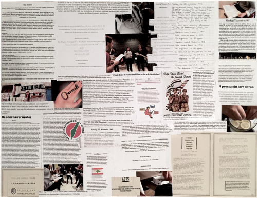

It's only through your thoughts I can remember who I am
Trykk på bildet for å komme til en større, interaktiv versjon.
I uke 41 var vi så heldige å få delta på en workshop sammen med kunstnerne Hakim Bishara og Hagar Ophir. Dette samarbeidet er en del av kunstsatsningen «Vågestykke»; en serie tidsavgrensede kunstprosjekt ved Høgskolen på Vestlandet. Da skolen ble bygget ble det satt av et budsjett til kunst, og det ble da besluttet at deler av dette budsjettet skulle brukes til andre alternativer til kunstformidling enn fysisk kunst i skolebygget. Målet er «å aktivisere mennesker på og rundt høgskolen, og se nærmere på skolens samfunnsoppdrag og ambisjoner». Prosjektet startet opp i 2016 og varer ut 2018.
Innholdet i workshopen hadde sammenheng med Hagar og Hakims utstilling «It’s only through your thoughts that I can remember who I am», som finner sted i Bergen i Kunsthall 3.14., fra 21. oktober til 17. desember 2017. Se linken for nærmere informasjon om utstillingen og innholdet i denne.
Vi fikk i oppgave å dokumentere workshopen på valgfri måte, og jeg valgte å lage en collage. Collagen er deretter avbildet og gjort interaktiv slik at det er mulig å trykke på bilder og tekst, og komme til siden dette er hentet fra. Tanken bak dette var at andre da kan følge deler av mine undersøkelser til oppgaver vi fikk under workshopen, og slik aktivt få et innblikk i hva jeg oppdaget eller lærte mer om i prosessen. Jeg har også brukt bilder jeg tok underveis, og materiale vi fikk fra Hakim og Hagar når jeg lagde collagen. Jeg har ikke valgt å dokumentere hele prosessen i detaljer, men gi et innblikk i workshopen gjennom collagen og en forklaring av tanken bak arbeidet med denne.
Til første møte med Hagar og Hakim fikk vi i oppgave å undersøke en historie fra Palestina/Libanon i 1942-1943, og gjerne forsøke å knytte denne opp mot Norge. Man ble oppfordret til å bruke ulike kilder, både akademiske og ikke akademiske. En av oppgavene videre var å ha med seg et objekt fra denne tiden og fortelle en personlig historie (din eller en annens) knyttet til denne gjenstanden. Mitt første innfall var å google Palestina/Libanon 1942-1943. Jeg skummet raskt igjennom mange tekster og leitet etter en kjent historisk begivenhet eller liknende fra denne tiden. Da jeg ikke umiddelbart kunne finne noe som gav meg en idé om hvilket objekt jeg kunne ta med meg til undervisningen, ringte jeg til min søster for å spørre om hun hadde noen tips. Hun sa jeg kunne ta med meg en gammel kjellernøkkel fra barndomshjemmet vårt. Hun ledet meg inn på historien om nøklene; hvordan mange palestinske flyktninger fortsatt har nøkkelen til familiens hus i Palestina som et symbol på retten til å returnere.
Store deler av min forberedelse til workshopen gikk med på å lese ulike kilder og historier om palestinske nøkler. En del av oppgaven var nemlig at dersom man ikke hadde en personlig historie, så skulle man finne på en og være overbevisende nok til at de andre ville tro den var sann. På bakgrunn av informasjonen jeg tilegnet meg lagde jeg en historie om hvordan denne nøkkelen var havnet i mine hender, og knyttet det opp mot min egen families historie, hvor de under andre verdenskrig måtte låse av huset sitt og flytte til slektninger da tyskerne okkuperte flere bygg i nabolaget.
Denne måten å lete etter informasjon på ledet meg inn på helt andre tekster enn de jeg skummet gjennom da jeg googlet etter land og årstall. I stedet for historiske fakta, inneholdt disse tekstene personlige historier og synspunkter på konflikten i Israel/Palestina. Hovedsakelig tok jeg utgangspunkt i diskusjonsforum og tekster som vanligvis ikke ville vært anvendt i skolesammenheng grunnet kildekritikk. I ettertid har jeg reflektert over hvordan disse personlige synspunktene og erfaringene ikke nødvendigvis representerer en historisk sannhet, men de representerer likevel det som oppleves som sannheter for menneskene bak disse ytringene. I skolesammenheng kan jeg se verdien av dette for å utvikle forståelse for andre mennesker, kunne se på andres argumenter med et kritisk blikk, og gjøre seg opp en mening om sine egne standpunkter i saker.
Da jeg laget collagen, tok jeg utgangspunkt i bildet av at jeg holder nøkkelen fra barndomshjemmet mitt i hånden. Jeg brukte også to andre objekter: en dagbok og en sitron som to av medstudentene mine hadde valgt å ta med til workshopen. Deretter samlet jeg informasjon fra workshopen og mine egne undersøkelser som kunne knyttes opp mot disse. Jeg kunne også se sammenhenger mellom de ulike objektene, tekster, og materiale fra workshopen. Collagen ble nærmest en slags «etterforskningstavle» som kan gi andre muligheten til å følge sporene mine fra arbeidet med Hakim og Hagar. Når jeg laget collagen, leitet jeg etter et slags svar på hva jeg hadde lært i løpet av disse dagene. Jeg endte opp med tittelen på bildet, som også er tittelen på Hagar og Hakim sin utstilling; «It’s only through your thoughts that I can remember who I am». Under åpningstalen til utstillingen ble det sagt at vi må huske at det var en tid der det ikke var konflikt i Palestina, og at vi må tørre å håpe at det kan bli slik igjen. Det er kan fremstå litt naivt å tenke at ved å huske det som var før, vil alt det vonde som har skjedd i ettertid kunne viskes ut, og nåtiden endres. Men det kan likevel gi et glimt av håp. Og om dette håpet kan lede til at noen tar steget, krysser sperrer og gir hverandre en sjanse, slik som Hagar fra Israel og Hakim fra Palestina i sitt samarbeid om utstillingen, kan dette være et eksempel for andre som viser at det er mulig.